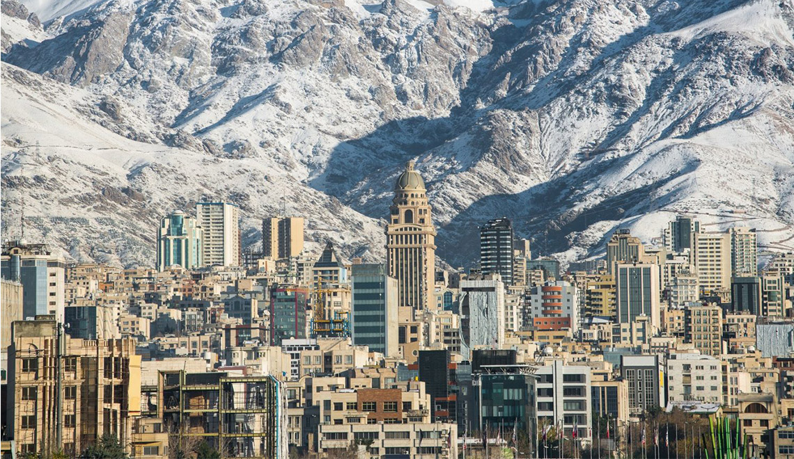

About Me:
My name is Ryan Eslami. I like to study history and politics especially concerning the middle east and more specifically Iran. I also enjoy reading books, watching anime, and playing video games.
I like to travel and one day I wish to visit Tehran, Iran.
I like the nature of Iran. Many people Do not know about the vast amount of biodiversity in the country. This is a video showing our beutiful nature!
My favorite book is "A Higher Call" by Adam Makos